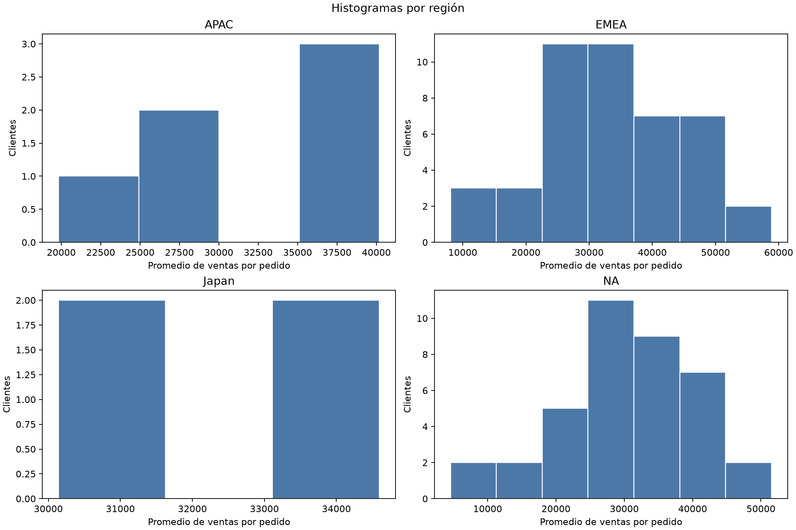
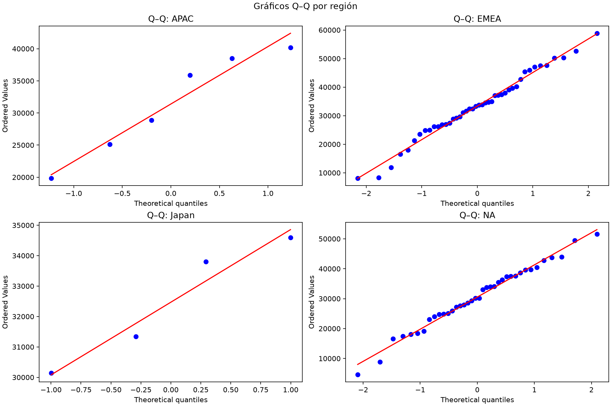
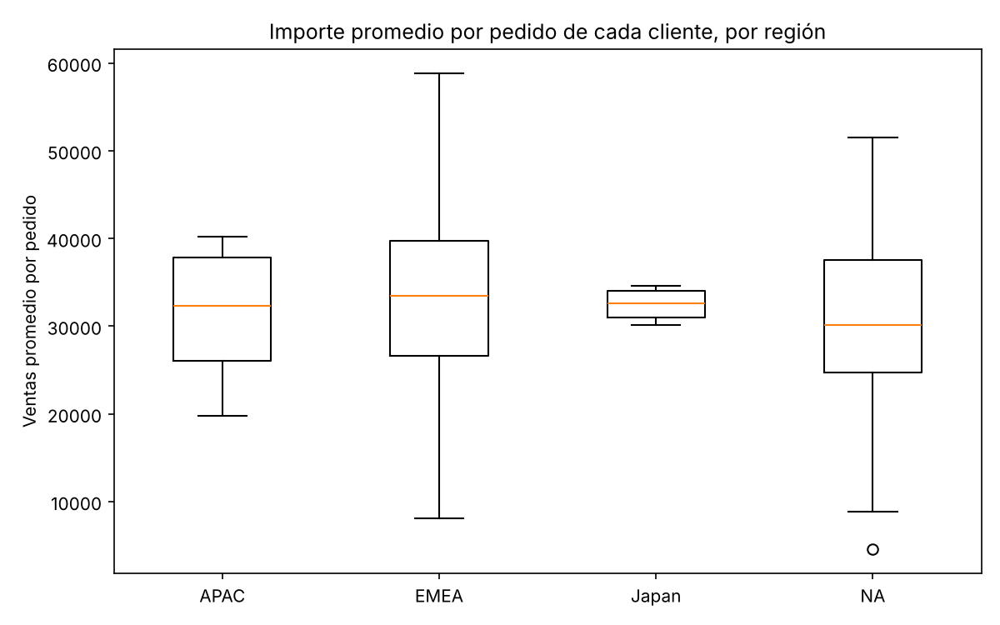

Extracción
Se leyó sales_data_sample.csv sin modificar el archivo original, con su codificación real (IBM437), para que las tildes se lean bien: Martín, Cataluña, Berguvsvägen. Se conservaron todas las filas y estados de pedido.
Transformación con Python y PySpark, análisis estadístico y visualización interactiva con Power BI, sobre un catálogo de modelos a escala de autos, motos, aviones, barcos y trenes.
Universidad Cooperativa de Colombia · Campus Pasto.
Michael David Lagos Rosero · Nicolás Alejandro Bastidas · Julio Esteban Bolaños · Ronald Felipe Benavides.
El dataset son modelos a escala. Elige una categoría y explora su modelo 3D: arrástralo para girarlo y usa la rueda para acercarte. Cada tarjeta muestra sus ventas reales (pedidos Shipped).
Línea seleccionada
La categoría líder del catálogo: autos clásicos de colección, los que más importe generan en todo el periodo.
Los modelos 3D (archivos .glb en la carpeta models/) se cargan con Three.js solo cuando eliges su categoría, y representan cada línea del catálogo. Las cifras de ventas provienen del análisis del tablero Power BI.
Antes de construir el tablero, los datos de ventas se extrajeron, transformaron y validaron con PySpark.
Se leyó sales_data_sample.csv sin modificar el archivo original, con su codificación real (IBM437), para que las tildes se lean bien: Martín, Cataluña, Berguvsvägen. Se conservaron todas las filas y estados de pedido.
Se quitaron espacios sobrantes y los textos vacíos pasaron a nulos. Se recalculó PRICEEACH en las 1.304 filas donde venía truncado en 100 (SALES / QUANTITYORDERED) y se corrigieron ciudades mal escritas (Gensve, Koln, NYC…).
Los tipos se asignaron con TRY_CAST en Spark SQL, marcando cada fallo. Se derivaron fecha, año, mes y trimestre, la bandera es_venta_realizada (Shipped) y las métricas discount_pct, estimated_cost, profit y margin_pct.
El script se detiene si hay líneas de pedido repetidas, valores que no se pudieron convertir o si SALES no cuadra con cantidad × precio. El resumen queda en validation_summary.json.
La capa limpia se cargó en tres formatos: sales_clean.csv (fuente de Power BI), sales_clean.json y la base SQLite sales_clean.db (tabla ventas).
Las métricas filtran pedidos Shipped. El dataset no trae costo ni canal: la ganancia supone un costo del 60 % del MSRP y deal_size se usa como aproximación de canal. Ambos supuestos se declaran en el informe.
Python y PySpark: etl_pyspark.py lee el origen, normaliza los valores vacíos y ejecuta las reglas definidas en Spark SQL.
crudo = (spark.read.option("header", True)
.option("encoding", "IBM437").csv(str(ORIGEN)))
crudo = crudo.select([F.expr(f"NULLIF(REGEXP_REPLACE(TRIM({c}), ' +', ' '), '')").alias(c)
for c in crudo.columns])
crudo.createOrReplaceTempView("ventas_normalizadas")
df = spark.sql(SQL_TIPOS.read_text(encoding="utf-8")).dropDuplicates()
# PRICEEACH viene truncado en 100: se recalcula desde SALES
precio_mal = F.abs(F.col("sales") - F.col("quantity_ordered") * F.col("price_each")) > 0.01
df = df.withColumn("price_each", F.when(precio_mal,
F.round(F.col("sales") / F.col("quantity_ordered"), 2)).otherwise(F.col("price_each")))
df = (df.replace(CIUDADES, subset=["city"])
.withColumn("es_venta_realizada", F.col("status") == "Shipped")
.withColumn("order_date", F.to_date("order_timestamp"))
.withColumn("discount_pct", F.round((F.col("msrp") - F.col("price_each")) / F.col("msrp"), 4))
.withColumn("estimated_cost", F.round(F.col("msrp") * PORC_COSTO * F.col("quantity_ordered"), 2))
.withColumn("profit", F.round(F.col("sales") - F.col("estimated_cost"), 2))
.withColumn("margin_pct", F.round(F.col("profit") / F.col("sales"), 4)))Spark SQL: transformaciones_etl.sql convierte los datos y marca cada conversión inválida para auditoría.
SELECT
TRY_CAST(ORDERNUMBER AS INT) AS order_number,
TRY_CAST(QUANTITYORDERED AS INT) AS quantity_ordered,
TRY_CAST(PRICEEACH AS DECIMAL(12,2)) AS price_each,
TRY_CAST(SALES AS DECIMAL(14,2)) AS sales,
TRY_TO_TIMESTAMP(ORDERDATE, 'M/d/yyyy H:mm') AS order_timestamp,
STATUS AS status,
ORDERNUMBER IS NOT NULL AND
TRY_CAST(ORDERNUMBER AS INT) IS NULL AS invalid_order_number,
SALES IS NOT NULL AND
TRY_CAST(SALES AS DECIMAL(14,2)) IS NULL AS invalid_sales,
ORDERDATE IS NOT NULL AND
TRY_TO_TIMESTAMP(ORDERDATE, 'M/d/yyyy H:mm') IS NULL AS invalid_order_date
FROM ventas_normalizadas;Power Query: tras ejecutar el ETL, Power BI carga sales_clean.csv y asigna tipos. QuoteStyle.Csv evita que nombres con coma (AV Stores, Co.) se partan en dos columnas, y "en-US" lee bien el punto decimal.
let
RutaProyecto = "C:\\RUTA_DEL_PROYECTO\\",
Origen = Csv.Document(File.Contents(RutaProyecto & "data\\clean\\sales_clean.csv"),
[Delimiter = ",", Encoding = 65001, QuoteStyle = QuoteStyle.Csv]),
Encabezados = Table.PromoteHeaders(Origen, [PromoteAllScalars = true]),
Tipos = Table.TransformColumnTypes(Encabezados, {
{"sales", type number}, {"order_date", type date},
{"profit", type number}, {"discount_pct", type number},
{"es_venta_realizada", type logical}
}, "en-US")
in
TiposResultado: se conserva la capa limpia completa y las medidas DAX calculan con pedidos enviados (Shipped).
Explora las siete páginas del informe. Los filtros y gráficos se recalculan dentro de Power BI.
Usa los botones de la derecha para navegar: cambian la página del informe y la explicación al mismo tiempo. Si cambias usando las pestañas internas de Power BI, el contenido derecho no puede actualizarse automáticamente porque el informe público está en un dominio externo.
Estos diez requerimientos orientan el análisis de ventas, clientes, productos, regiones y evolución temporal dentro del tablero.
Mide el importe vendido cada mes y permite comparar el comportamiento entre países.
Ganancia y margen estimados por categoría, con un costo supuesto del 60 % del precio de lista (el dataset no trae costos).
Ordena los clientes según el importe de ventas que generan en el período seleccionado.
Contrasta las ventas de períodos equivalentes para identificar cambios entre años.
Calcula la variación porcentual de las ventas frente al mes anterior.
Compara el valor promedio de las ventas entre las regiones comerciales.
Unidades vendidas por producto según deal_size (Small, Medium, Large), usado como aproximación de canal.
Ubica las ventas por país para visualizar dónde se concentra el importe vendido.
Compara las unidades por línea de pedido entre rangos de descuento frente al precio de lista.
Clasifica clientes según su aporte acumulado a las ventas totales.
Las métricas de ventas y el análisis estadístico usan únicamente registros con estado Shipped.
Margen estimado total: 40 % (costo supuesto del 60 % del MSRP). Classic Cars gana más en valor, pero Trains tiene el mejor margen. El descuento no se asocia con más unidades por pedido. La moneda no está documentada en el dataset.
Complementa el requerimiento 6: evalúa si el importe promedio por pedido de los clientes difiere entre APAC, EMEA, Japan y NA.
La pregunta es si las medias poblacionales del importe promedio por pedido son iguales en las cuatro regiones.
Hipótesis nula (H₀): el importe promedio por pedido de los clientes es igual en APAC, EMEA, Japan y NA.
Hipótesis alternativa (H₁): al menos una región tiene un importe promedio por pedido de los clientes diferente.
Regla de decisión: con α = 0,05, si p < 0,05 se rechaza H₀ y se aplica Tukey HSD para ubicar los pares de regiones que difieren. Si p ≥ 0,05, no se rechaza H₀.
Explicado de forma simple: primero calculamos cuánto vende, en promedio, cada cliente por pedido. Después comparamos esos promedios entre regiones. El valor p indica si las diferencias observadas son lo bastante grandes para considerarlas una diferencia real y no una variación normal de los datos. Un p menor que 0,05 indica evidencia de diferencia; un p mayor o igual a 0,05 indica que no hay evidencia suficiente.
status = 'Shipped'.sales por order_number, obteniendo 286 pedidos enviados. Se validó que cada pedido tuviera un único cliente y una única región.ANOVA compara las diferencias entre medias regionales con la variación entre clientes de una misma región. La hipótesis nula plantea cuatro medias iguales; la alternativa, que al menos una difiere.
| Prueba | F | Grados de libertad | Valor p |
|---|---|---|---|
| ANOVA clásico | 0,4849 | (3, 88) | 0,6936 |
| ANOVA de Welch | 0,4773 | (3, 17,8531) | 0,7021 |
Eta cuadrado = 0,0163. En esta muestra, aproximadamente el 1,63 % de la variabilidad observada en los promedios por cliente se asocia con las diferencias entre regiones.



Código Python funcional del análisis: basado en analisis_anova.py del proyecto.
import csv
from collections import defaultdict
from pathlib import Path
from scipy import stats
SOURCE = Path("data/clean/sales_clean.csv")
ALPHA = 0.05
H0 = "El importe promedio por pedido es igual en todas las regiones."
H1 = "Al menos una región tiene un importe promedio por pedido diferente."
def welch_anova(groups):
names = list(groups)
n = {name: len(groups[name]) for name in names}
mean = {name: sum(groups[name]) / n[name] for name in names}
variance = {
name: sum((value - mean[name]) ** 2 for value in groups[name]) / (n[name] - 1)
for name in names
}
k = len(names)
weights = {name: n[name] / variance[name] for name in names}
weight_sum = sum(weights.values())
weighted_mean = sum(weights[name] * mean[name] for name in names) / weight_sum
a = sum(weights[name] * (mean[name] - weighted_mean) ** 2 for name in names) / (k - 1)
b = sum((1 / (n[name] - 1)) * (1 - weights[name] / weight_sum) ** 2 for name in names)
statistic = a / (1 + (2 * (k - 2) / (k**2 - 1)) * b)
df1 = k - 1
df2 = (k**2 - 1) / (3 * b)
return statistic, df1, df2, stats.f.sf(statistic, df1, df2)
with SOURCE.open(encoding="utf-8", newline="") as file:
shipped_rows = [row for row in csv.DictReader(file) if row["status"] == "Shipped"]
orders = {}
for row in shipped_rows:
order = orders.setdefault(row["order_number"], {"sales": 0.0, "territories": set(), "customers": set()})
order["sales"] += float(row["sales"])
order["territories"].add(row["territory"])
order["customers"].add(row["customer_name"])
if any(len(o["territories"]) != 1 or len(o["customers"]) != 1 for o in orders.values()):
raise ValueError("Hay pedidos sin región o cliente único.")
clients = defaultdict(lambda: {"territories": set(), "order_sales": []})
for order in orders.values():
customer = next(iter(order["customers"]))
clients[customer]["territories"].update(order["territories"])
clients[customer]["order_sales"].append(order["sales"])
if any(len(client["territories"]) != 1 for client in clients.values()):
raise ValueError("Hay clientes con región no única.")
groups = defaultdict(list)
for customer, client in clients.items():
territory = next(iter(client["territories"]))
average = sum(client["order_sales"]) / len(client["order_sales"])
groups[territory].append(average)
classic_f, classic_p = stats.f_oneway(*groups.values())
welch_f, welch_df1, welch_df2, welch_p = welch_anova(groups)
# Solo se comparan pares de regiones si el ANOVA global rechaza H0.
if classic_p < ALPHA:
tukey = stats.tukey_hsd(*groups.values())
print("Se rechaza H0: revisar los p-valores ajustados de Tukey HSD.")
print(tukey.pvalue)
else:
print("No se rechaza H0: Tukey HSD no es necesario.")
values = [value for group in groups.values() for value in group]
grand_mean = sum(values) / len(values)
ss_between = sum(len(group) * (sum(group) / len(group) - grand_mean) ** 2
for group in groups.values())
eta_squared = ss_between / sum((value - grand_mean) ** 2 for value in values)
print(f"H0: {H0}")
print(f"H1: {H1}")
print(f"ANOVA clásico: F={classic_f:.4f}, p={classic_p:.4f}, eta²={eta_squared:.4f}")
print(f"ANOVA de Welch: F={welch_f:.4f}, p={welch_p:.4f}")Explicación breve: el código filtra pedidos enviados, suma cada pedido, calcula un promedio por cliente y agrupa esos promedios por región. Finalmente ejecuta ANOVA clásico, Welch y eta cuadrado. La comparación Tukey HSD solo se activa si el ANOVA detecta una diferencia global (p < 0,05); en los datos actuales no se activa porque p = 0,6936.